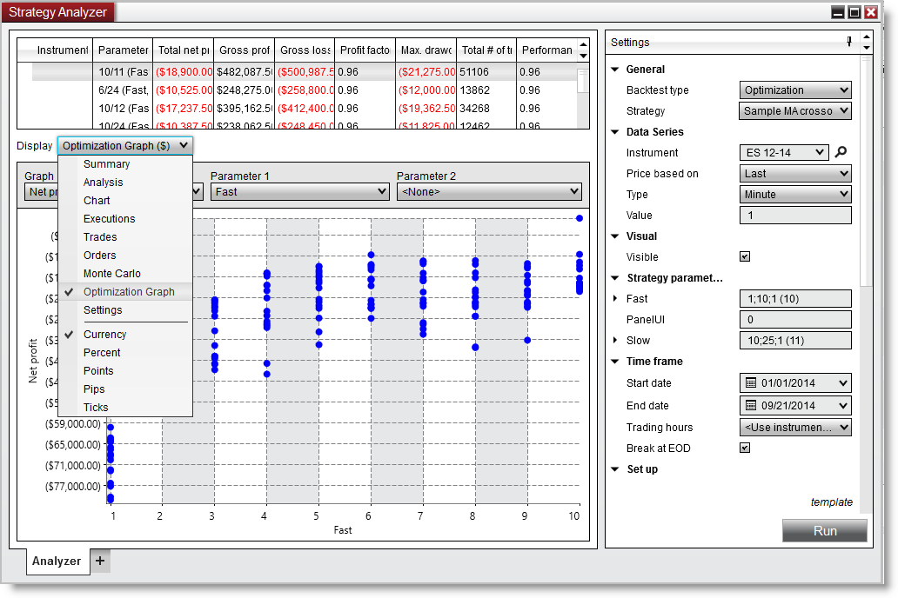
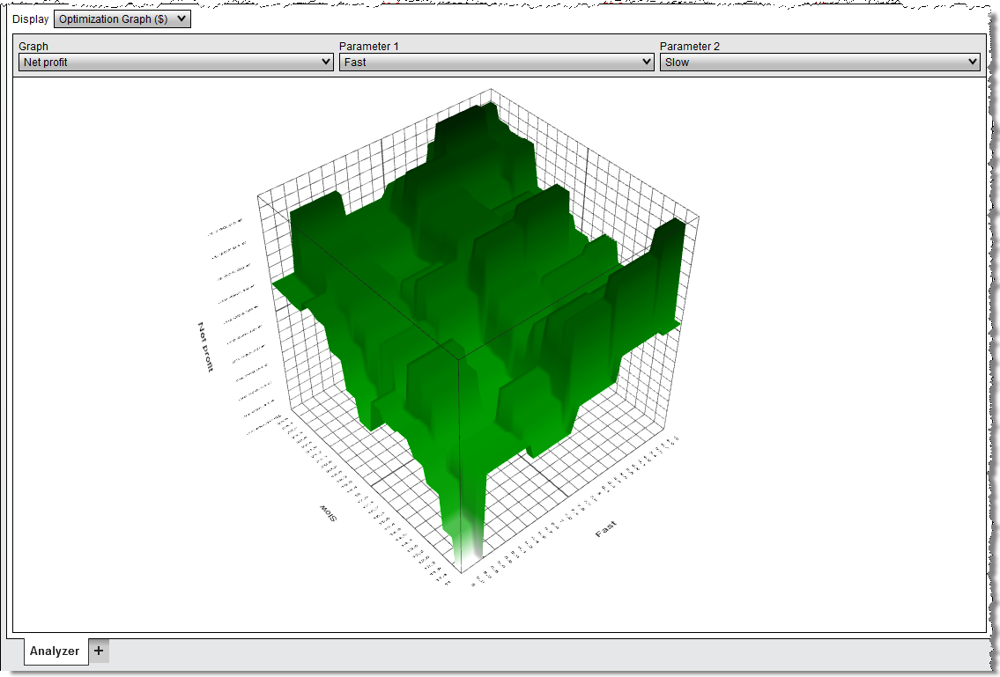

|
<< Click to Display Table of Contents >> Optimization Graphs |


|
Optimization Graphs
|
<< Click to Display Table of Contents >> Optimization Graphs |
|
The Optimization Graph can only be selected in the Display selector only after an optimization has been run. The optimization graph can be displayed in a 2D or 3D graph. A 2D graph is used when only graphing a single parameter. If you graph 2 parameters then a 3D graph is displayed.

 Understanding the 2D optimization graph
Understanding the 2D optimization graph
Understanding the 2D Optimization GraphThe 2D optimization graph displays each and every test run for the optimization. This allows you to see the entire range of results produced from an optimization run. Allowing you to take a look over the entire solution domain to determine if your top results are stable. Instead of choosing the absolute best parameter set that might be an outlier you may instead desire to choose a parameter that has a gradual build up which may indicate stability in the result set.
The 2D Optimization graph will be displayed when you have only selected a single parameter and is the default graph view.
Using the 2D Optimization GraphEach dot signifies a backtest result, graphed by the X-Axis and the Y-Axis. The X-Axis can be changed by selecting the Graph parameter. |
 Understanding the 3D optimization graph
Understanding the 3D optimization graph
 Understanding the 3D Optimization GraphThe 3D optimization graph expands upon the 2D optimization graph by allowing an additional axis to place an additional parameter. You must have at least 2 parameters being optimized and with the 'Parameter 2' combo box select the secondary parameter. This will trigger the display of the 3D optimization graph. Select 'None' to return to the 2D optimization graph.
Using the 3D Optimization GraphUsing the following mouse controls you can interact with the 3D optimization graph.
|